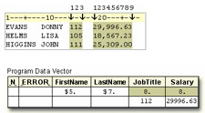

Overview
Introduction
Raw data can be organized in several ways.
This external file contains data that is arranged in columns or fixed fields. You can specify a beginning and ending column for each field. However, this file contains nonstandard data, because one of the variable's values includes a special character, the dollar sign ($).
This external file contains no special characters, but its data is free format, meaning that it is not arranged in columns. Notice that the values for a particular field do not begin and end in the same columns.
How your data is organized and what type of data you have determine which input style you should use to read the data. SAS provides three primary input styles- column input, formatted input, and list input. This chapter teaches you how to use column input and formatted input to read standard and nonstandard data that is arranged in fixed fields.
Objectives
In this chapter, you learn to
- distinguish between standard and nonstandard numeric data
- read standard fixed-field data
- read nonstandard fixed-field data
Review of Column Input
Introduction
In the Chapter, Creating SAS Data Sets from Raw Data, you learned how to use column input to read raw data that is stored in an external file.
You can use column input to read the values for Item, IDnum, InStock, and BackOrd from the raw data file that is referenced by the fileref Invent.
input Item $ 1-13 IDnum $ 15-19 InStock 21-22
BackOrd 24-25;
Notice that the INPUT statement lists the variables with their corresponding column locations in order from left to right. However, one of the features of column input is the ability to read fields in any order.
For example, you could have read the values for InStock and BackOrd before the values for Item and IDnum.
input InStock 21-22 BackOrd 24-25 Item $ 1-13
IDnum $ 15-19;
When you print a report that is based on this data set, by default, the variables will be listed in the order in which they were created.
| InStock | BackOrd | Item | IDnum |
|---|---|---|---|
| 3 | 20 | BIRD FEEDER | LG088 |
| 6 | 12 | GLASS MUGS | SB082 |
| 12 | 6 | GLASS TRAY | BQ049 |
| 15 | 20 | PADDED HANGRS | MN256 |
| 23 | 0 | JEWELRY BOX | AJ498 |
| 9 | 12 | RED APRON | AQ072 |
| 27 | 0 | CRYSTAL VASE | AQ672 |
| 21 | 0 | PICNIC BASKET | LS930 |
Column Input Features
Column input has several features that make it useful for reading raw data.
- It can be used to read character variable values that contain embedded blanks
- input Name $ 1-25;
- No placeholder is required for missing data. A blank field is read as missing and does not cause other fields to be read incorrectly.
- input Item $ 1-13 IDnum $ 15-19
Instock 21-22 Backord 24-25;
- Fields or parts of fields can be re-read
- input Item $ 1-13 IDnum $ 15-19 Supplier $ 15-16
InStock 21-22 BackOrd 24-25;
- Fields do not have to be separated by blanks or other delimiters
- input Item $ 1-13 IDnum $ 14-18 InStock 19-20
BackOrd 21-22;
Identifying Standard and Nonstandard Numeric Data
Standard Numeric Data
Standard numeric data values can contain only
- numbers
- decimal points
- numbers in scientific, or E, notation (23E4)
- minus signs and plus signs
Some examples of standard numeric data are 15, -15, 15.4, +.05, 1.54E3, and -1.54E-3.
Nonstandard Numeric Data
Nonstandard numeric data includes
- values that contain special characters, such as percent signs (%), dollar signs ($), and commas (,)
- date and time values
- data in fraction, integer binary, real binary, and hexadecimal forms
The external file that is referenced by the fileref Empdata contains the personnel information for the technical writing department of a small computer manufacturer. The fields contain values for each employee's last name, first name, job title, and annual salary.
Notice that the values for Salary contain commas. So, the values for Salary are considered to be nonstandard numeric values.
Choosing an Input Style
Nonstandard data values require an input style that has more flexibility than column input.
You can use formatted input, which combines the features of column input with the ability to read both standard and nonstandard data.
Whenever you encounter raw data that is organized into fixed fields, you can use
- column input to read standard data only
- formatted input to read both standard and nonstandard data
Using Formatted Input
General Form of the INPUT Statement Using Formatted Input
Formatted input is a very powerful method for reading both standard and nonstandard data in fixed fields.
General form, INPUT statement using formatted input:
INPUT <pointer-control7gt; variable informat.;
where
- pointer-control positions the input pointer on a specified column
- variable is the name of the variable that is being created
- informat is the special instruction that specifies how SAS reads raw data
In this chapter, you will learn to work with two column pointer controls.
- The @n moves the input pointer to a specific column number
- The +n moves the input pointer forward to a column number that is relative to the current position
Let's first take a look at the @n column pointer control.
Using the @n Column Pointer Control
The @n is an absolute pointer control that moves the input pointer to a specific column number.
The @ moves the pointer to column n, which is the first column of the field that is being read.
General form, INPUT statement using formatted input and the @n pointer control:
INPUT @n variable informat.;
- variable is the name of the variable that is being created
- informat is the special instruction that specifies how SAS reads raw data
Let's use the @n pointer control to locate variable values in the external file Empdata. As you can see, the values for LastName begin in column 1. We could start with the @1 pointer control.
input @1 LastName $7.
However, the default column pointer location is column 1, so you do not need to use a column pointer control to read the first field.
input LastName $7.
Next, the values for FirstName begin in column 9. To point to column 9, use an @ sign and the column number in the INPUT statement:
input LastName $7. @9 FirstName $5.
| Note | The $7. and $5. informats are explained later in this chapter. |
|---|
Reading Columns in Any Order
Column pointer controls are very useful. For example, you can use the @n to move a pointer forward or backward when reading a record.
In this INPUT statement, the value for FirstName is read first, starting in column 9.
input @9 FirstName $5.
Now let's read the values for LastName, which begin in the first column. Here you must use the @n pointer control to move the pointer back to column 1.
input @9 FirstName $5. @1 LastName $7.
The rest of the INPUT statement specifies the column locations of the raw data value for JobTitle and Salary.
input @9 FirstName $5. @1 LastName $7. @15 JobTitle 3.
@19 Salary comma9.;
| Note | The $5., $7., 3., and comma9. informats are explained later in this chapter |
|---|
The +n Pointer Control
The +n pointer control moves the input pointer forward to a column number that is relative to the current position. The + moves the pointer forward n columns.
General form, INPUT statement using formatted input and the +n pointer control:
INPUT +n variable informat.;
- variable is the name of the variable that is being created
- informat is the special instruction that specifies how SAS reads raw data
In order to count correctly, it is important to understand where the column pointer control is located after each data value is read. Let's look at an example.
Suppose you want to read the data from Empdata in the following order: LastName, FirstName, Salary, JobTitle. Like the @n pointer control, the default column location for the +n pointer control is column 1. Because the values for LastName begin in column 1, a column pointer control is not needed.
input LastName $7.
With formatted input, the column pointer control moves to the first column following the field that was just read. In this example, after LastName is read, the pointer moves to column 8.
To start reading FirstName, which begins in column 9, you move the column pointer control ahead 1 column with +1.
input LastName $7. +1 FirstName $5.
After reading FirstName, the column pointer moves to column 14. Now you want to skip over the values for JobTitle and read the values for Salary, which begin in column 19. Move the column pointer ahead 5 columns from column 14.
input LastName $7. +1 FirstName $5. +5 Salary comma9.
The last field to be read contains the values for JobTitle. You can use the @n column pointer control to return to column 15.
input LastName $7. +1 FirstName $5. +5 Salary comma9.
@15 JobTitle 3.;
| Note | The $7., $5., comma9., and 3. informats are explained later in this chapter |
|---|
| Note | You can use the notation +(-n) to move the +n pointer control backward |
|---|
Using Informats
Remember that the general form of the INPUT statement for formatted input is
INPUT
An informat is an instruction that tells SAS how to read raw data. SAS provides many informats for reading standard and nonstandard data values. Here is a small sample.
| PERCENTw.d | DATEw. | NENGOw. |
| $BINARYw. | DATETIMEw. | PDw.d |
| $VARYINGw. | HEXw. | PERCENTw. |
| $w. | JULIANw. | TIMEw. |
| COMMAw.d | MMDDYYw. | w.d |
Note that
- each informat contains a w value to indicate the width of the raw data field
- each informat also contains a period, which is a required delimiter
- for some informats, the optional d value specifies the number of implied decimal places
- informats for reading character data always begin with a dollar sign ($)
Reading Character Values
The $w. informat enables you to read character data. The w represents the field width of the data value (the total number of columns that contain the raw data field).
In the example below, the $ indicates that FirstName is a character variable, the 5 indicates a field width of five columns, and a period ends the informat.
input @9 FirstName $5.;
Reading Standard Numeric Data
The informat for reading standard numeric data is the w.d informat.
The w specifies the field width of the raw data value, the period serves as a delimiter, and the d optionally specifies the number of implied decimal places for the value. The w.d informat ignores any specified d value if the data already contains a decimal point.
For example, the raw data value that is shown below contains 6 digits (4 are decimals) and 1 decimal point. Therefore, the w. informat requires a field width of only 7 to correctly read the raw data value.
| Raw Data Value | w. Informat | Variable Value |
|---|---|---|
| 34.0008 -> 7.-> 34.0008 | ||
In the example that is shown below, the values for JobTitle in columns 15-17 contain only numbers. Remember that standard numeric data values can contain only numbers, decimal points, scientific notation, and plus and minus signs.
A d value is not necessary to read the values for JobTitle. Simply move the column pointer control forward 7 spaces to column 15, name the variable, and specify a field width of 3.
input @9 FirstName $5. @1 LastName $7. +7 JobTitle 3.;
| Warning | Remember to specify the period in the informat name. For example, if you
omit the period in the following INPUT statement, SAS assigns a length of
3 to JobTitle instead of reading JobTitle with the 3. informat.
input @9 FirstName $5. @1 LastName $7. +7 JobTitle 3; |
|---|
Reading Nonstandard Numeric Data
The COMMAw.d informat is used to read numeric values and to remove embedded
- blanks
- commas
- dashes
- dollar signs
- percent signs
- right parentheses
- left parentheses, which are converted to minus signs
The COMMAw.d informat has three parts:
| 1. | the informat name | COMMA |
|---|---|---|
| 2. | a value that specifies the width of the field to be read (including dollar signs, decimal places, or other special characters), followed by a period | w. |
| 3 | an optional value that specifies the number of implied decimal places for a value (not necessary if the value already contains decimal places) | d |
In the example below, the values for Salary contain commas, which means that they are nonstandard numeric values.
The values for Salary begin in column 19, so use the @n or +n pointer control to point to column 19, and then name the variable.
data perm.empinfo;
infile empdata;
input @9 FirstName $5. @1 LastName $7. +7 JobTitle 3.
@19 Salary
Now add the COMMAw.d informat and specify the field width. The values end in column 27, so the field width is 9 columns. Add a RUN statement to complete the DATA step.
data perm.empinfo;
infile empdata;
input @9 FirstName $5. @1 LastName $7. +7 JobTitle 3.
@19 Salary comma9.;
run;
If you use PROC PRINT to display the data set, the commas are removed from the values for Salary in the resulting output.
data perm.empinfo;
infile empdata;
input @9 FirstName $5. @1 LastName $7. +7 JobTitle 3.
@19 Salary comma9.;
run;
proc print data=perm.empinfo;
run;
| Obs | FirstName | LastName | JobTitle | Salary |
|---|---|---|---|---|
| 1 | DONNY | EVANS | 112 | 29996.63 |
| 2 | ALISA | HELMS | 105 | 18567.23 |
| 3 | JOHN | HIGGINS | 111 | 25309.00 |
| 4 | AMY | LARSON | 113 | 32696.78 |
| 5 | MARY | MOORE | 112 | 28945.89 |
| 6 | JASON | POWELL | 103 | 35099.50 |
| 7 | JUDY | RILEY | 111 | 25309.00 |
Thus, the COMMAw.d informat does more than simply read the raw data values. It removes special characters such as commas from numeric data and stores only numeric values in a SAS data set.
DATA Step Processing of Informats
Let's place our INPUT statement in a DATA step and submit it for processing. Remember that after the DATA step is submitted, it is compiled and then executed.
data perm.empinfo;
infile empdata;
input @9 FirstName $5. @1 LastName $7. +7 JobTitle 3.
@19 Salary comma9.;
run;
During the compile phase, the character variables in the program data vector are defined with the exact length that is specified by the informat. But notice that the lengths that are defined for JobTitle and Salary in the program data vector are different from the lengths that are specified by their informats.
Remember, by default, SAS stores numeric values (no matter how many digits the value contains) as floating-point numbers in 8 bytes of storage. The length of a stored numeric variable is not affected by an informat's width nor by other column specifications in an INPUT statement.
However, it is still necessary to specify the actual width of a raw data field in an INPUT statement. Otherwise, if you specify a default field width of 8 for all numeric values, you'll get inappropriate variable values when the program executes.
In the following example, the values for JobTitle would contain embedded blanks, thus creating invalid numeric values.
data perm.empinfo;
infile empdata;
input @9 FirstName $5. @1 LastName $7.
+7 JobTitle 8. @19 Salary comma8.;
run;
| Note | Remember that the w value of the informat represents the width of the field in the raw data file. The values for JobTitle only have a width of 3 in the raw data file. However, because they are numeric values, SAS stores them with a default length of 8. |
|---|
Record Formats
The record format of an external file might affect how data is read with column input and formatted input. A record format specifies how records are organized in a file.
In some operating environments, external files can have different types of record formats. Two common record formats are fixed-length records and variable-length records.
Fixed-Length Records
External files that have a fixed-length record format have an end-of-record marker after a predetermined number of columns. A typical record length is 80 columns.
Variable-Length Records
Files that have a variable-length record format have an end-of-record marker after the last field in each record.
As you can see, the length of each record varies.
Reading Variable-Length Records
When you are working with variable-length records that contain fixed-field data, you might have values that are shorter than others or that are missing. This can cause problems when you try to read the raw data into your SAS data set.
For example, notice that the following INPUT statement specifies a field width of 8 columns for Receipts. In the third record, the input pointer encounters an end-of-record marker before the 8th column.
input Dept $ 1-11 @13 Receipts comma8.;
| The asterisk symbolizes the end-of-record marker and is not part of the data |
The input pointer moves down to the next record in an attempt to find a value for Receipts. However, GRILL is a character value, and Receipts is a numeric variable. Thus, an invalid data error occurs, and Receipts is set to missing.
The PAD Option
When you use column input or formatted input to read fixed-field data in variable-length records, you can avoid problems by using the PAD option in the INFILE statement.The PAD option pads each record with blanks so that all data lines have the same length.
infile receipts pad;
The examples in this chapter have not required the PAD option. However, when you use column input or formatted input to read fixed-field data in variable-length records, remember to determine whether or not you need to use the PAD option.
| Warning | The PAD option is useful only when missing data occurs at the end of a record and when SAS encounters an end-of-record marker before the last field is completely read. |
|---|
The default value of the maximum record length is determined by your operating environment. If you get unexpected results when reading many variables, you might need to change the maximum record length by specifying the LRECL=option in the INFILE statement. For more information about the LRECL= option, see the SAS documentation for your operating environment.
Summary
Text Summary
Review of Column Input
When data is arranged in columns or fixed fields, you can use column input to read them. With column input, the beginning and ending column are specified for each field. Character variables are identified by a dollar ($) sign.
Column input has several features:
- Fields can be read in any order
- It can be used to read character variables that contain embedded blanks
- No placeholder is required for missing data. A blank field is read as missing and does not cause other fields to be read incorrectly
- Fields or parts of fields can be re-read
- Fields do not have to be separated by blanks or other delimiters
- It can be used to read standard character and numeric data
Identifying Nonstandard Numeric Data
Standard numeric data values are values that contain only numbers, scientific notation, decimal points, and plus and minus signs. When numeric data contains characters such as commas or dollar signs, the data is considered to be nonstandard.
Nonstandard numeric data includes
- values that contain special characters, such as percent signs, dollar signs, and commas
- date and time values
- data in fraction, integer binary, real binary, and hexadecimal forms
Choosing an Input Style
SAS provides two input styles for reading data in fixed fields- column input and formatted input. You can use
- column input to read standard data only
- formatted input to read both standard and nonstandard data
Using Formatted Input
Formatted input uses column pointer controls to position the input pointer on a specified column. A column pointer control is optional when the first variable is in the first column.
The @n is an absolute pointer control that moves the input pointer to a specific column number. You can read columns in any order with the @n column pointer control.
The +n is a relative pointer control that moves the input pointer forward to a column number that is relative to the current position. The +n pointer control cannot move backward. However, you can use the notation +(-n) to move the pointer control backward.
Using Informats
An informat tells SAS how to read raw data. There are informats for reading standard and nonstandard character values and for reading standard and nonstandard numeric data values.
Informats always contain a w value to indicate the width of the raw data field. A period (.) ends the informat or separates the w value from the optional d value, which specifies the number of implied decimal places.
Record Formats
A record format specifies how records are organized in a file. Some operating environments have different types of record formats; the two most common are fixed-length records and variablelength records.
When you read variable-length records that contain fixed-field data into a SAS data set, there might be values that are shorter than others or that are missing. The PAD option pads each record with blanks so that all data lines have the same length.
Points to Remember
- When you use column input or formatted input, the input pointer stops on the column following the last column that was read
- When you use informats, you do not need to specify a d value if the data values already contain decimal places
- Column input can be used to read standard character or standard numeric data only
- Formatted input can be used to read both standard and nonstandard data
- When reading variable-length records that contain fixed-field data, you can avoid problems by using the PAD option in the INFILE statement